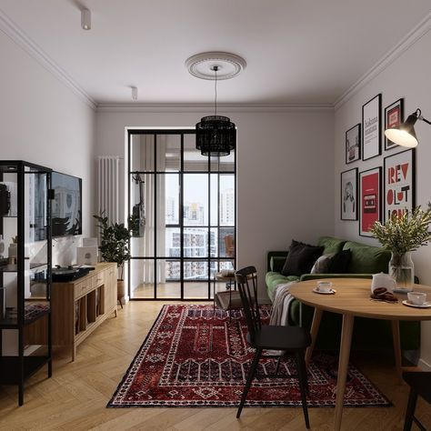

Відомий як "Хюґе", цей стиль поєднує натуральне дерево, багато світла та текстилю. Він створений для того, щоб протистояти суворим зимам та дефіциту сонця.
Створює глибоке відчуття безпеки та комфорту. Використання натуральних матеріалів (шерсть, дерево) активує сенсорне заспокоєння, знижуючи рівень кортизолу. Це ідеальний простір для зміцнення сімейних зв'язків та емоційного тепла.